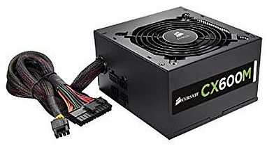

The power supply unit (PSU) converts AC current from the wall outlet into the DC currents the system needs to run. In a desktop or laptop, +5, -5, +12 and -12 voltages are generated. The 3 and 5 volts are used for the electronic circuitry, and the 12 volts are required for any spinning drives.
Modern personal computers universally use switched-mode power supplies. Some power supplies have a manual switch for selecting input voltage, while others automatically adapt to the mains voltage.
Manual Switch PSU
If your PSU has a manual input switch as seen above on the right take note: Running a power supply set to 220 on a 120 volt wall outlet will just prevent it from working, but if it is set to 120 and you plug it into a 220 volt outlet, you will most likely damage it. If you are lucky there will be a fuse you can replace to fix it, but if you hear a POP, see some smoke, or smell burned material, it will need to be replaced.
Fortunately, power supplies usually come installed with the PC case and are standardized between Desktop and Laptops, so you will probably never have to choose between power supplies, but if you do, here are a few things to look for in a power supply:
- EMI Electro Magnetic Interference
- Fan Rating - Airflow rated in cubic feet per minute
- Hold-up time - Time period that a power supply's output will remain within specified limits, following power
disturbances or a loss of input power.
- Load regulation - Change in output voltage due to a varying load.
- Line regulation - Change in output voltage due to varying input voltage.
- MTBF - Mean Time Between Failure.
- Noise - Loudness
- Operating temperature - Range of temperatures a power supply can be safely operated.
- Overvoltage protection - Shuts down the power supply if the output voltage exceeds a specified limit.
Next Page: Motherboards